Экспорт и внешние программы
Как сцена из Motif попадает в игру: кадры PNG, палитры, пикселизация в PixaTool одной кнопкой и командная строка для сборки игры.
Экспорт кадров
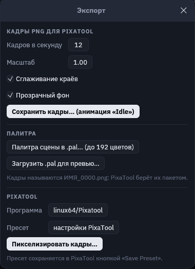
Кнопка «Экспорт» вверху справа открывает это окно:
- Кадров в секунду — сколько кадров снять с анимации. Для пиксель-арта обычно 8–12.
- Масштаб — пикселей на единицу артборда: 1 даёт размер артборда, 2 — вдвое больше.
- Сглаживание краёв. Перед пикселизацией его лучше выключить: края станут жёсткими, и пикселизатор не будет придумывать промежуточные оттенки.
- Прозрачный фон — без цвета артборда, для спрайтов.
- «Сохранить кадры…» снимает выбранную анимацию в папку:
ИМЯ_0000.png,ИМЯ_0001.pngи так далее. - «Выгрузить в Godot…» — все анимации персонажа сразу в сцену Godot, см. «Анимации в Godot».
- «Сохранить UI-набор…» — кнопки и панели для интерфейса игры, см. «UI-наборы».
- PixaTool внизу окна — те же кадры сразу после пикселизации, см. ниже.
Палитра и пиксельное превью
- «Палитра сцены в .pal» сохраняет все цвета сцены в формате JASC
.pal, не больше 192 цветов (это предел PixaTool). Если загрузить её в PixaTool, пикселизация останется в цветах вашей сцены. - «Загрузить .pal для превью…» — показать сцену в чужой палитре, например в палитре всей игры.
- Кнопка «Пиксели» вверху показывает сцену без сглаживания в маленьком разрешении (поле рядом задаёт ширину в пикселях) и в выбранной палитре. Так видно, как картинка переживёт пикселизацию: не слишком ли тонкие линии и не сливаются ли детали.
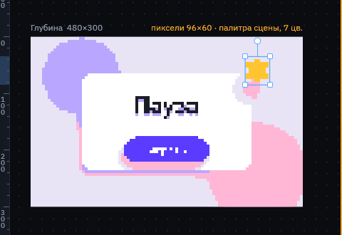
PixaTool
PixaTool превращает обычную картинку в пиксель-арт: уменьшает её, приводит к палитре, добавляет дизеринг и контуры. Командной строки у него нет, поэтому Motif управляет им сам: запускает вне экрана, загружает ваш пресет, прогоняет через него все кадры анимации и забирает результат. Ни одного диалога нажимать не нужно.
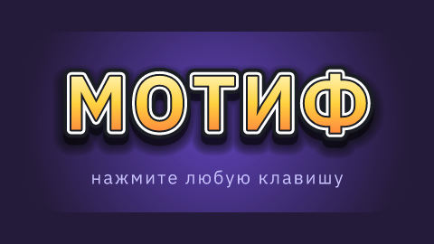
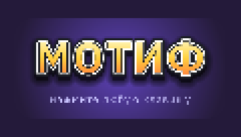
Один раз: настроить эффект и сохранить пресет
- Сохраните из Motif один кадр («Сохранить кадры…») и палитру сцены («Палитра сцены в .pal…»).
- Откройте PixaTool, загрузите кадр кнопкой «Import» и палитру в разделе «Palette». Подберите размер пикселя, дизеринг, контур.
- Нажмите «Save Preset» и сохраните файл
.preset, например рядом со сценой.
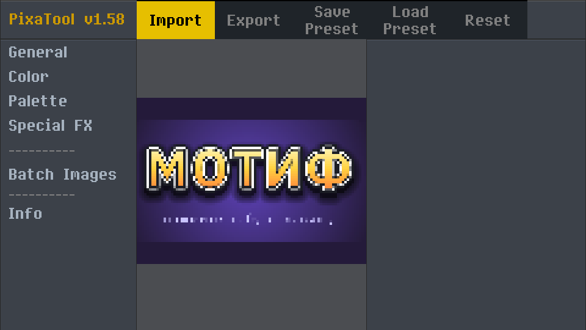
Каждый раз: кнопка «Пикселизировать кадры…»
- Выберите анимацию на таймлайне и откройте «Экспорт».
- В разделе PixaTool проверьте «Программу». Motif сам ищет
Pixatool.exeв папкеtoolsрядом с папкой Motif (напримерVectorEditor\tools\NewPixatool_158\win64). Если не нашёл, нажмите на поле и укажите файл. - В «Пресете» выберите свой
.preset. Без пресета PixaTool работает со своими настройками по умолчанию. Крестик убирает пресет. - Нажмите «Пикселизировать кадры…» и выберите папку. В окне появится полоса прогресса, а в папке —
ИМЯ_0000.png,ИМЯ_0001.png… уже в пиксель-арте.
Пути к PixaTool и пресету запоминаются в файле motif.ini рядом с программой. Кадры перед PixaTool снимаются с настройками этого же окна: частота кадров, масштаб, сглаживание, прозрачный фон.
Motif управляет PixaTool снаружи и не меняет его файлы. PixaTool запускается со своим отдельным профилем, поэтому ваши ручные настройки в нём не меняются. Мост рассчитан на PixaTool 1.58. Если PixaTool обновится и мост перестанет работать, ручной способ ниже останется.
Вручную: пакетная обработка
- В Motif: «Сохранить кадры…».
- В PixaTool: раздел «Batch Images», «Load Images» — выберите все кадры, затем папку для результата. PixaTool запишет
ИМЯ_0000_processed.pngи так далее.
Pixel FX Designer
Pixel FX Designer (частицы и эффекты от того же автора) читает те же JASC .pal. Сохраните палитру сцены из Motif и загрузите её в Pixel FX Designer: взрывы и искры будут в тех же цветах, что и персонаж.
Командная строка motif.exe
Всё, что делает окно экспорта, умеет и motif.exe. Это удобно в скриптах сборки игры: поменяли сцену — пересобрали кадры одной командой.
motif.exe check сцена.msc
motif.exe render сцена.msc -o кадр.png --scale 2
motif.exe render сцена.msc --anim Idle --time 0.5 -o кадр.png
motif.exe frames сцена.msc --anim Idle --fps 12 --width 120 --no-aa -o out\idle
motif.exe palette сцена.msc -o out\scene.pal
motif.exe pixel сцена.msc --anim Idle --preset пиксель4.preset --no-aa -o out\idle_px
motif.exe kit ui.msc --scale 2 -o game\ui
motif.exe godot hero.msc --node hero --no-aa -o game\hero| Команда / ключ | Что делает |
|---|---|
check | Проверяет сцену и печатает объекты и анимации; при ошибке пишет строку и причину. |
render | Один кадр PNG; с --anim и --time — кадр анимации в заданный момент. |
frames | Все кадры анимации в папку, как кнопка «Сохранить кадры…». |
palette | Палитра сцены в JASC .pal. |
pixel | Кадры анимации сразу через PixaTool, как кнопка «Пикселизировать кадры…». |
kit | UI-набор: каждая деталь ui/slice в каждом состоянии и тема Godot .tres, как кнопка «Сохранить UI-набор…». Без -o — в папку ИМЯ_ui. |
godot | Все анимации в атлас, SpriteFrames, сцену .tscn и машину состояний в AnimationTree, как кнопка «Выгрузить в Godot…». См. «Анимации в Godot». |
--node ID / --pivot X Y / --machine ИМЯ | Для godot: один объект вместо всей сцены, точка привязки спрайта, машина состояний. |
--preset X.preset | Пресет PixaTool для pixel; без него — настройки PixaTool по умолчанию. |
--pixatool путь | Где лежит Pixatool.exe. Без ключа он ищется в переменной MOTIF_PIXATOOL и в папке tools рядом с Motif. |
--scale N / --width W | Пикселей на единицу артборда, или итоговая ширина в пикселях. |
--no-aa | Без сглаживания краёв. |
--transparent | Без фона артборда. |
--fps N | Кадров в секунду для frames и pixel (по умолчанию 12). |
UI-наборы для Godot
Кнопки, панели, рамки, полосы здоровья и подсказки рисуются в Motif как обычные фигуры, а в игру уходят готовой темой Godot. Начните с «Файл → Новый UI-набор»: это заготовка с кнопкой в четырёх состояниях, круглой кнопкой «закрыть», панелью, полосой, флажком и подсказкой. Она открывается в режиме UI (artboard … ui, переключатель «Всё / UI / Игра» сверху): экспорт UI-набора стоит в окне «Экспорт» первым, а лишние для интерфейса разделы спрятаны. Кнопка «Добавить состояния Hover и Press» в разделе «Интерфейс» заводит пустые анимации состояний и включает Animate.
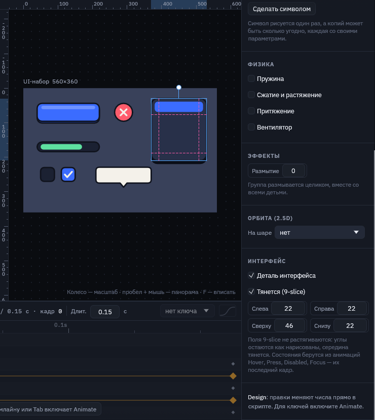
- Деталь интерфейса (
ui) — объект или группа экспортируется отдельной картинкой. Так помечают иконки и всё, что не тянется. - Тянется (9-slice) (
slice) — поля слева, сверху, справа и снизу не растягиваются: углы и рамка остаются как нарисованы, тянется середина. На холсте поля видны розовым пунктиром. - Состояния — анимации с именами
Hover,Press,Disabled,Focus. Состояние — последний кадр анимации, поэтому та же анимация в игре и в редакторе показывает переход. Если анимация не меняет деталь, картинка не сохраняется. - Тени, свечение и обводки выходят за рамку детали — Motif сам добавляет нужный запас (
expand_margin), и кнопка в Godot остаётся своего размера.
group button "Кнопка" at 130 70 ui slice 20 {
rect base at 0 5 size 180 52 r 14 fill #2441a8
rect body size 180 52 r 14 fill #3b6cff stroke #10131d 4
}
anim Hover 0.15s {
body.fill 0: #3b6cff | 0.15: #6f93ff
}
anim Press 0.08s {
body.y 0: 0 | 0.08: 5
}«Экспорт → Сохранить UI-набор…» (или motif kit) пишет в папку PNG по деталям и состояниям (button_normal.png, button_hover.png…) и тему ИМЯ.tres. Деталь с состояниями становится вариацией типа Button, без них — PanelContainer. Имя вариации — id детали в PascalCase; если оно совпадает с классом Godot, добавляется Kit (button → ButtonKit).
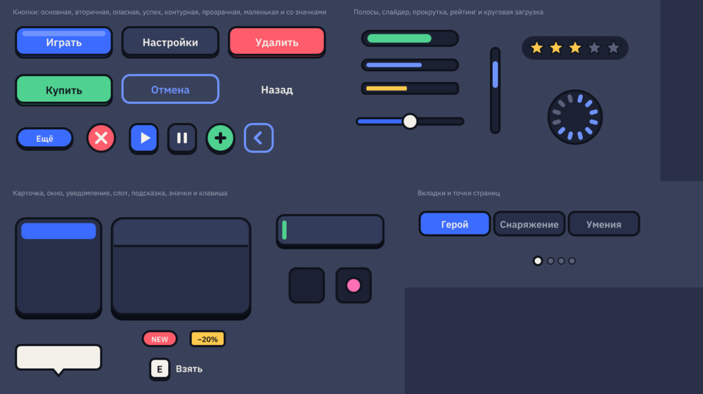
- Положите папку набора в проект Godot, например в
res://ui/. - Назначьте
ui.tresсвойству Theme корневогоControl— тема перейдёт на всех потомков. - У кнопки или панели в инспекторе выберите Theme Type Variation:
ButtonKit,Card,Tooltip…
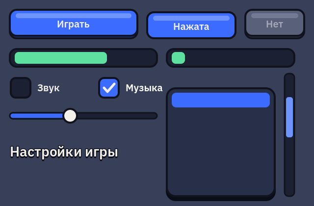
Пример modern-button.msc — веб-кнопка с Uiverse.io, повторённая по её CSS: как переводить padding, box-shadow, overflow: hidden, :hover и :active в фигуры, маску и анимации.
Масштаб и сглаживание берутся из окна экспорта: для пиксельного интерфейса снимите набор без сглаживания и с целым масштабом.
Анимации в Godot
Одна кнопка выгружает персонажа в проект Godot целиком: все его анимации, готовую сцену и машину состояний.
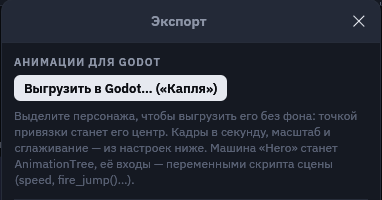
- Выделите персонажа: группу, в которой лежит всё, что с ним двигается. Без выделения выгружается вся сцена.
- «Экспорт → Выгрузить в Godot…» и выберите папку внутри проекта Godot, например
res://characters/hero/. - Перетащите
ИМЯ.tscnна свою сцену или создайте её экземпляр из кода. Она сразу играет.
В папке появляются:
ИМЯ.png— атлас: все кадры всех анимаций на одной картинке. Кадры одного размера, это коробка, в которую помещается каждая поза, поэтому спрайт не прыгает при смене анимации. Одинаковые кадры (стоячая анимация, первая поза прыжка) хранятся один раз.ИМЯ_frames.tres—SpriteFrames: анимации с именами из Motif, скоростью из «Кадров в секунду» и повтором как в скрипте.ИМЯ.tscn— сцена: кореньNode2DиAnimatedSprite2D«Sprite». Точка корня — центр выделенного объекта (или середина артборда), спрайт сдвинут так, что персонаж стоит там же, где в Motif.- Если в сцене есть машина состояний, в
ИМЯ.tscnдобавляютсяAnimationPlayerс теми же анимациями иAnimationTreeс теми же состояниями и переходами, а рядом ложится скриптИМЯ.gd. Входы машины становятся его переменными: число и флаг можно менять из игры и в инспекторе, у триггера есть методfire_…().
# персонаж из examples/machine.msc в игре
var hero = preload("res://characters/hero/hero.tscn").instantiate()
add_child(hero)
hero.speed = velocity.length() / 100.0 # Idle → Run, как в панели машины
if Input.is_action_just_pressed("jump"):
hero.fire_jump() # any → Jump, потом сам вернётся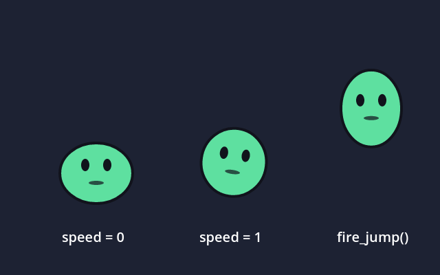
- Условия переходов переводятся в выражения
AnimationTree(speed > 0.5,jump,not hurt), «в конце» — в переход по окончании анимации,any— в переходы из каждого состояния. - Смешивание (
blend) в Godot не переносится: кадры спрайта не смешиваются, состояние переключается сразу. - Без сглаживания краёв у спрайта включается фильтр Nearest: пиксели остаются чёткими.
Обновление при сохранении
После первой выгрузки сохранённая сцена запоминает папку Godot и объект. Дальше каждое «Сохранить» (Ctrl+S) выгружает её туда же: правите анимацию в Motif, сохраняете, переключаетесь в Godot — он сам переимпортирует атлас и сцену. В окне «Экспорт» под кнопкой видно, куда идёт выгрузка; «Отвязать» это выключает. С флажком «Через PixaTool» обновление идёт тоже через PixaTool, в фоне. Связи хранятся в motif.ini рядом с программой, по одной папке на файл сцены.
Пиксель-арт: через PixaTool
Флажок «Через PixaTool» под кнопкой выгрузки прогоняет каждый кадр через PixaTool перед тем, как он ляжет в атлас. Берутся программа и пресет из раздела «PixaTool» того же окна (пресет сохраняется в PixaTool кнопкой «Save Preset»). PixaTool запускается сам, вне экрана; ход работы виден полосой под флажком, редактор при этом не замирает.
- В PixaTool уходят только разные кадры, уже обрезанные по общей коробке, поэтому сетка пикселей у всех кадров одна и персонаж не дрожит.
- Спрайт выходит в размере пикселей пресета: при пикселе 4 капля 125 точек шириной становится 31 пикселем. Сдвиг спрайта пересчитывается и округляется до целых пикселей, фильтр — Nearest. Крупнее на экране делайте масштабом узла или окна Godot, а не масштабом экспорта.
- Машина состояний, скрипт и
AnimationTreeте же, что без PixaTool.
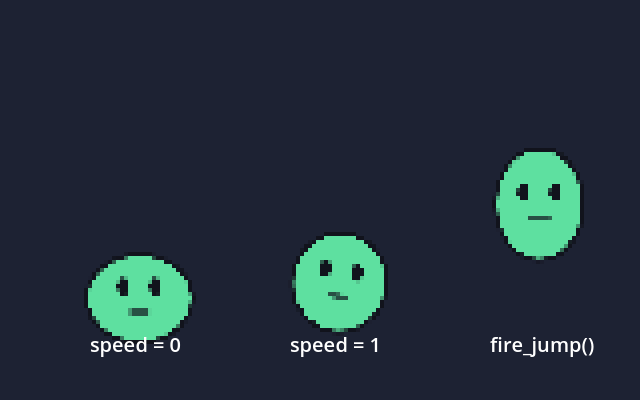
В командной строке то же делает motif godot:
motif.exe godot machine.msc --node hero --pivot 240 238 --fps 12 -o game\characters\hero--node — какой объект выгружать, --pivot X Y — точка привязки в координатах артборда (здесь — ноги капли), --machine ИМЯ — какую машину перенести, если их несколько. --pixelize или --preset X.preset пропускает кадры через PixaTool (он ищется в --pixatool, в MOTIF_PIXATOOL и в папке tools рядом с Motif):
motif.exe godot machine.msc --node hero --preset px4.preset -o game\characters\hero